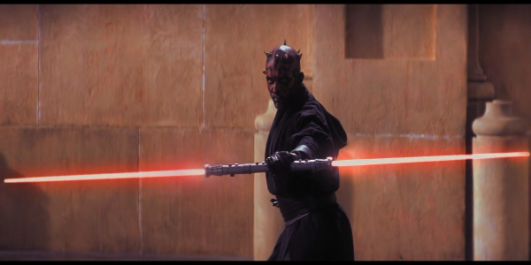

The film "Star Wars: Episode 1 - The Fantom Menace" unfolds ten years before the start of the Clone Wars, which led to a civil war between the Rebel Alliance and the troops of the Empire. In those days, Luke's father, Anakin Skywalker, who was later Darth Vader, was an apprentice and friend of Obi Wan Kenobi. The plot will tell about their acquaintance, and directly about the training of the young Anakin.
It all started with the fact that Obi Van and his teacher Qui-Gon went on as ambassadors to a meeting between the Trade Federation and the Naboo planet, where all disputable issues had to be resolved. However, the negotiations did not work, because the Sith Lord Darth Sidious intervened, who wanted to abduct the queen of the planet Naboo. However, Obi Vanu together with the teacher managed to save her, and as a result they were on the planet Tatooine, where they met young Anakin Skywalker.
